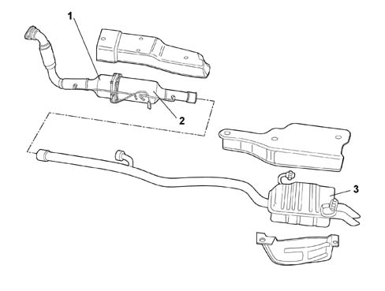

SUBASSEMBLY GRAPHIC INDEX
- Path
- Descriptions > 10 ENGINE > 1076 EXHAUST PIPES AND SILENCERS > SUBASSEMBLY GRAPHIC INDEX
- Kind
- system description
- Applies to
- engines: 2.0 16V JTD, 2.2 16V JTD; all production periods
- Interactive page
- https://sloeber94.github.io/elrnDB-fUlss/en/#/179006614
Applies to: engines: 2.0 16V JTD, 2.2 16V JTD; all production periods

1, Exhaust pipe front section
2, Anti-Particle Filter FAP
3, Exhaust pipe rear section
INTRODUCTION
The engine exhaust gases flow, via the manifold and the turbocharger, to the catalytic converter to which the FAP Anti-Particle Filter is secured and then to the rear silencer.
179.04.00.DF._.10.198.__.76.___._.__.X.01.H.___.tif
1, Front section of exhaust pipe 2, Particle Filter FAP 3, Rear section of exhaust pipe